- Startseite
- Produkte
Aus unserer eigenen Molkerei
Was aus unserer Milch wird
Frische Milch, Joghurt, Butter, Milchgetränke, Quark und Pudding. Alles aus unserer Molkerei in Schmargendorf, klassisch pasteurisiert und nie H-Milch.
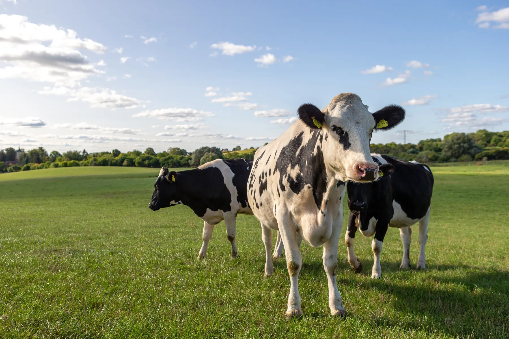

Auf einen Blick
Hemme Milch stellt in der eigenen Hofmolkerei in Schmargendorf bei Angermünde frische Milchprodukte her: Milch im Beutel, Joghurt, Butter, Buttermilch, Milchgetränke, Quark, Pudding und veganes Porridge. Alles ist klassisch pasteurisiert, H-Milch gibt es nicht.
- Produktgruppen
- 6
- Liter Milch verarbeiten wir täglich
- 33.000
- für 15 bis 20 Sekunden, nie H-Milch
- 75 °C
- Restlaufzeit der frischen Milch
- 10 Tage
Frische Milch
 Tagesfrische Vollmilchmind. 3,7 % Fett · 1 Liter
Tagesfrische Vollmilchmind. 3,7 % Fett · 1 Liter Teilentrahmte Milch1,8 % Fett · 1 Liter
Teilentrahmte Milch1,8 % Fett · 1 Liter
Unsere Milch ist ein reines Naturprodukt. Wir erhitzen sie traditionell und schonend: 15 bis 20 Sekunden bei etwa 75 Grad. So bleibt der volle Geschmack erhalten. Ultrahocherhitzung wie bei H-Milch gibt es bei uns nicht.
Die Vollmilch hat mindestens 3,7 Prozent Fett, die teilentrahmte Milch 1,8 Prozent. Beide gibt es im 1-Liter-Beutel, die Restlaufzeit beträgt 10 Tage. Für Cafés und Gastronomie füllen wir auch 10-Liter-Gebinde ab, zum Beispiel für Kaffeespezialitäten.
Milchgetränke
 Vanillemilchmind. 3,7 % Fett · 600 ml
Vanillemilchmind. 3,7 % Fett · 600 ml Schokomilchmind. 3,7 % Fett · 600 ml
Schokomilchmind. 3,7 % Fett · 600 ml Erdbeermilchmind. 3,7 % Fett · 600 ml
Erdbeermilchmind. 3,7 % Fett · 600 ml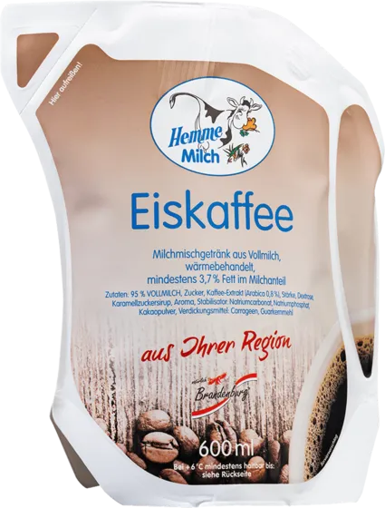
EiskaffeeApril bis September · 600 ml Vanillemilch to go230 ml
Vanillemilch to go230 ml Schokomilch to go230 ml
Schokomilch to go230 ml Eiskaffee to go230 ml
Eiskaffee to go230 ml
Unsere Milchgetränke bestehen zu mindestens 92 Prozent aus frischer Vollmilch und werden im Biosphärenreservat Schorfheide-Chorin hergestellt. Vanille-, Schoko- und Erdbeermilch gibt es das ganze Jahr, den Eiskaffee von April bis September.
Für zuhause gibt es den 600-ml-Beutel, für unterwegs den 230-ml-Becher. Schokomilch ist 12 Tage haltbar, Vanillemilch und Eiskaffee 14 Tage.
Joghurt
 Beerenfest200 g · Jubiläumssorte
Beerenfest200 g · Jubiläumssorte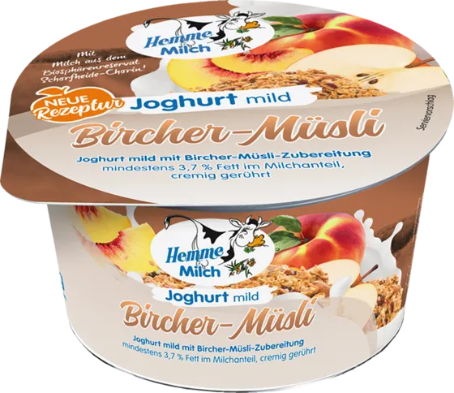
Bircher-Müsli200 g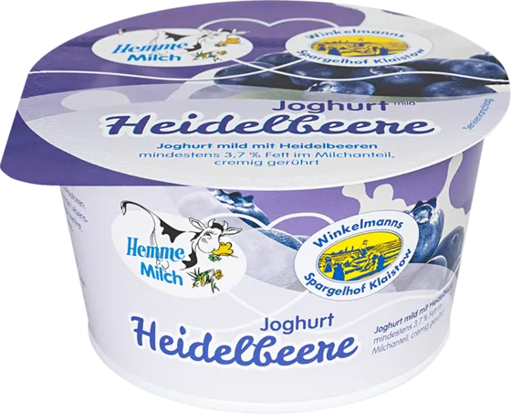
Heidelbeere200 g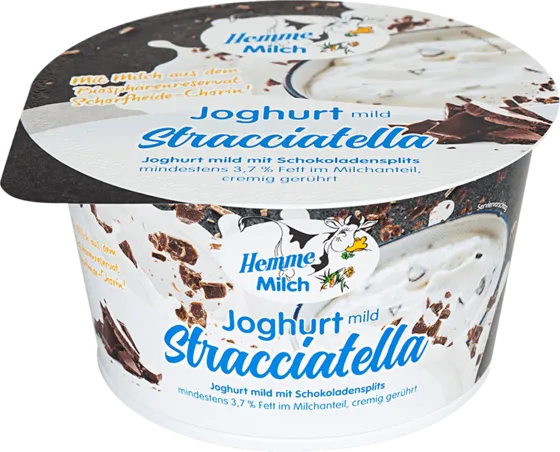
Stracciatella200 g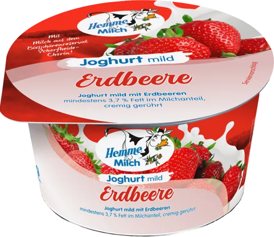
Erdbeere200 g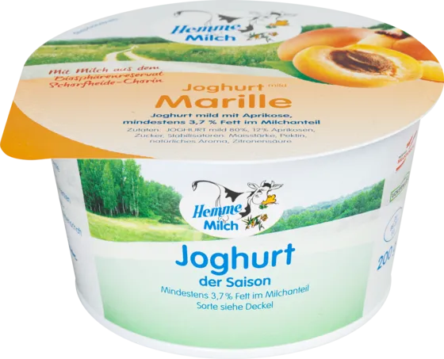
Saison-Joghurt200 g · wechselnde Sorte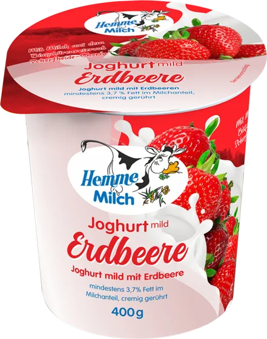
Erdbeere400 g Heidelbeere400 g
Heidelbeere400 g Kirsche400 g
Kirsche400 g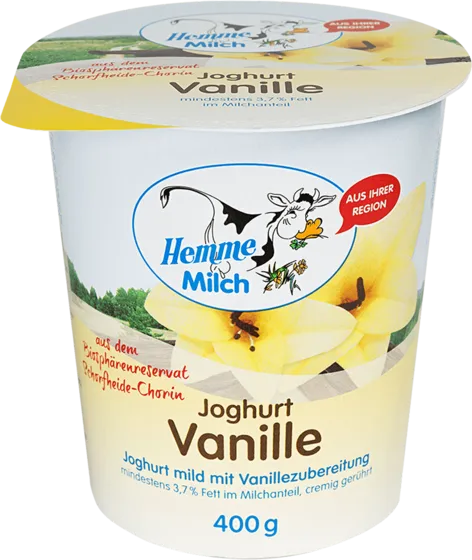
Vanille400 g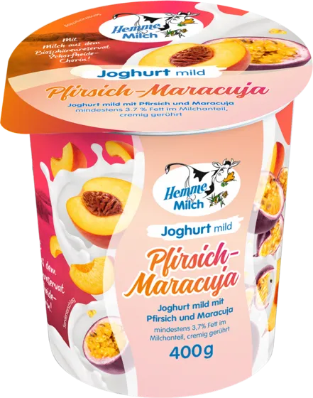
Pfirsich-Maracuja400 g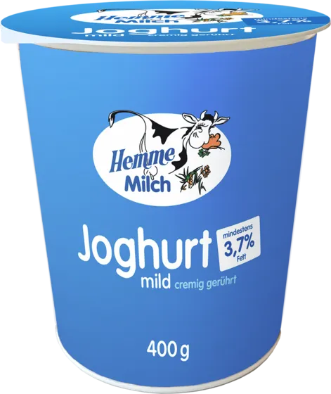
Naturjoghurtmind. 3,7 % Fett · 400 g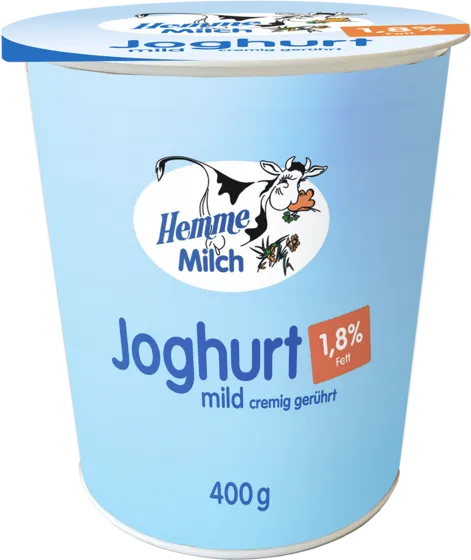
Naturjoghurt1,8 % Fett · 400 g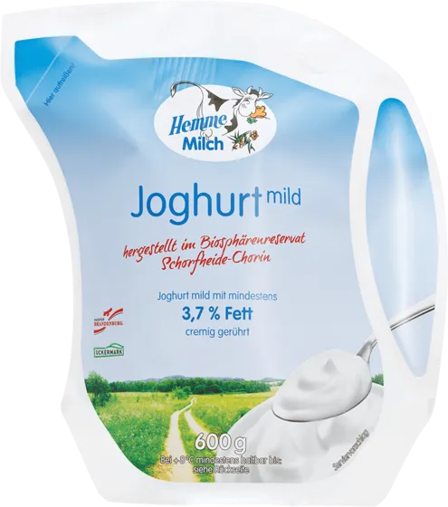
Joghurt mildmind. 3,7 % Fett · 600 g
Unser Fruchtjoghurt hat 83 Prozent Joghurtanteil und einen natürlichen Fettgehalt von 3,7 Prozent. Im 200-Gramm-Becher gibt es Beerenfest, unsere Sorte zum 25-jährigen Jubiläum, dazu Bircher-Müsli, Heidelbeere, Stracciatella, Erdbeere und einen wechselnden Saison-Joghurt. Im 400-Gramm-Becher gibt es Erdbeere, Heidelbeere, Kirsche, Vanille und Pfirsich-Maracuja.
Der Naturjoghurt ist cremig und herrlich mild, aus Vollmilch mit 3,7 Prozent oder aus teilentrahmter Milch mit 1,8 Prozent. Als Joghurt mild gibt es ihn auch im großen 600-Gramm-Becher. Alle Joghurts haben eine Restlaufzeit von 14 Tagen.
Butter & Buttermilch
 Fassbutter200 g · auch 12 kg für Gastro
Fassbutter200 g · auch 12 kg für Gastro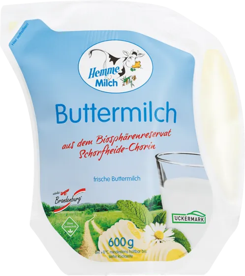
Buttermilchmax. 1 % Fett · 600 g Buttermilch Zitrone-Limettemax. 1 % Fett · 600 g
Buttermilch Zitrone-Limettemax. 1 % Fett · 600 g
Unsere Fassbutter entsteht aus natürlich gesäuertem Rahm frischer Vollmilch. So bleiben der besondere Geschmack und das vollsahnige Aroma erhalten, ideal für Gebäck. Es gibt sie im 200-Gramm-Stück und für Bäckereien und Gastronomie im 12-Kilogramm-Block.
Die Buttermilch stellen wir traditionell in ihrer ursprünglichsten Form aus dem reinen, frischen Butterkorn her. Sie hat höchstens 1 Prozent Fett und schmeckt frisch-säuerlich, natur oder mit Zitrone und Limette.
Quark
 Alsahna Natur250 g
Alsahna Natur250 g
Pudding & Porridge
 Schokopudding200 g
Schokopudding200 g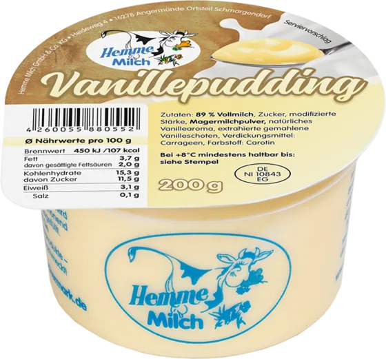
Vanillepudding200 g Porridgevegan · 200 g
Porridgevegan · 200 g
Schoko- und Vanillepudding machen wir aus frischer Hemme-Vollmilch, jeweils im 200-Gramm-Becher. Unser Porridge ist das einzige vegane Produkt im Sortiment.
Darum der Hemme Milchbeutel
- Einfach aufreißen, ohne Schere
- Praktisch zu gießen und restlos zu entleeren
- Platzsparend zu entsorgen, leer braucht er kaum Platz im Müll
- Rund 40 % Kreide im Material, weniger Kunststoff
- Warm machen direkt im Beutel, er ist mikrowellengeeignet
Den Beutel haben wir uns bewusst ausgesucht. Er kommt von einem innovativen Verpackungshersteller aus Schweden, ist sehr leicht und beeinträchtigt den Geschmack der Milch nicht. Entsorgt wird er über das Duale System.

Für Gastronomie und Großverbraucher
Hemme unterscheidet Produkte für den Handel und Artikel für Großverbraucher. Alles zum Milchmann-Service steht unter Für Gastro & Handel.
Frische Milch im 10-Liter-Gebinde
Für Kaffeespezialitäten in der Gastronomie.
10 Liter1 Stück pro KartonFassbutter im 12-kg-Block
Für Bäckereien und Gastronomie.
12 kg1 Stück pro KartonMilchgetränke im 600-ml-Beutel
Praktische Größe zum Weiterverarbeiten.
600 ml6 Stück pro Tray
Fragen zu unseren Produkten
Ist Hemme Milch H-Milch?
Nein. Unsere Milch ist klassisch pasteurisiert, also 15 bis 20 Sekunden auf etwa 75 Grad erhitzt. Ultrahocherhitzung wie bei H-Milch gibt es bei uns nicht.
Wie lange ist die Milch haltbar?
Die frische Milch im Beutel hat eine Restlaufzeit von 10 Tagen. Joghurt, Fassbutter, Buttermilch, Vanillemilch und Eiskaffee haben 14 Tage, Schokomilch 12 Tage.
Kann ich den Milchbeutel in die Mikrowelle stellen?
Ja. Ihr könnt die Milch direkt im Beutel warm machen, er ist mikrowellengeeignet.
Gibt es vegane Produkte?
Ja, unser Porridge im 200-Gramm-Becher ist vegan.
Woraus besteht der Fruchtjoghurt?
Unser Fruchtjoghurt hat einen Joghurtanteil von 83 Prozent und einen natürlichen Fettgehalt von 3,7 Prozent. Für einen 400-Gramm-Becher Joghurt braucht es 400 Gramm Milch.
Gibt es Hemme auch in großen Gebinden?
Ja. Für Gastronomie und Großverbraucher gibt es die frische Milch im 10-Liter-Gebinde und die Fassbutter im 12-Kilogramm-Block. Mehr dazu unter Für Gastro & Handel.
Wo gibt es Hemme?
In Berlin und Brandenburg bei EDEKA, REWE und vielen kleinen Läden, dazu im Milchladen auf dem Hof.